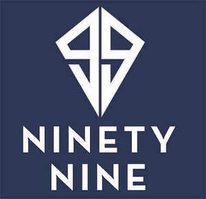

Trade Mark Journal No.2025/010 7 March 2025
UK00004161456 17 February 2025 (3,4,8,18,24)

- Class 3
- Shaving cream; Shaving lotion; Shaving gel; Shaving soap; Shaving sets, comprised of shaving cream and aftershave; Shaving balm; Shaving sprays; Shaving mousse; Shaving foam; Foam for use in shaving; Shaving oils; Shaving oil; Shaving preparations; Moisturiser; Anti-ageing moisturiser; Skin moisturiser; Moisturisers; Skin moisturisers; Skin moisturizer; Aftershave moisturising cream; Moisturising creams; Skin lotion; Anti-perspirant deodorants; Deodorant soap; Body deodorants; Anti-perspirants; Aftershave lotions; Shampoo; Hair shampoo; Dandruff shampoo; Shampoos; Hair shampoos; Hair conditioner; Hair moisturising conditioners; Cuticle conditioners; Hair conditioner bars; Skin conditioners; Body wash; Hair and body wash; Body washes; Body scrub; Body soap; Body lotion; Body shampoos; Body spray; Facial wash; Face and body lotions; Body lotions; Body scrubs; Cakes of soap for body washing; Bar soap; Bars of soap; Soap; Shower soap; Shampoo bars; Bath soap; Soaps in liquid form; Liquid soap; Liquid soaps; Eau de toilette; Eaux de toilette; Eau de Cologne; Eau de cologne; Eau de parfum; Eau de colognes; Perfume; Perfumes; Perfume oils; Perfumery and fragrances; Hair styling gel; Hair styling waxes; Lotions for beards; Hair grooming preparations; Beard care preparations; Shaving preparations; Body cleaning and beauty care preparations.
- Class 4
- Candles; Candles and wicks for candles for lighting; Tealight candles; Votive candles; Scented candles; Wicks for candles; Nightlights [candles]; Candles for use as nightlights; Candles for lighting; Fragranced candles; Soy candles.
- Class 8
- Razors; Non-electric razors; Disposable razors; Blades for electric razors; Electric razors; Straight razors; Razor knives; Safety razors; Razor blades.
- Class 18
- Toiletry bags; Bags; Toiletry bags sold empty; Wash bags for carrying toiletries.
- Class 24
- Towels; Bath towels.
AMAZON SERVICES.COM LIMITED
Representative: Loven Patents and Trademarks Limited